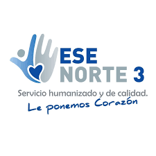
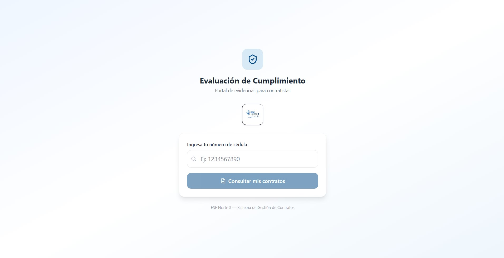
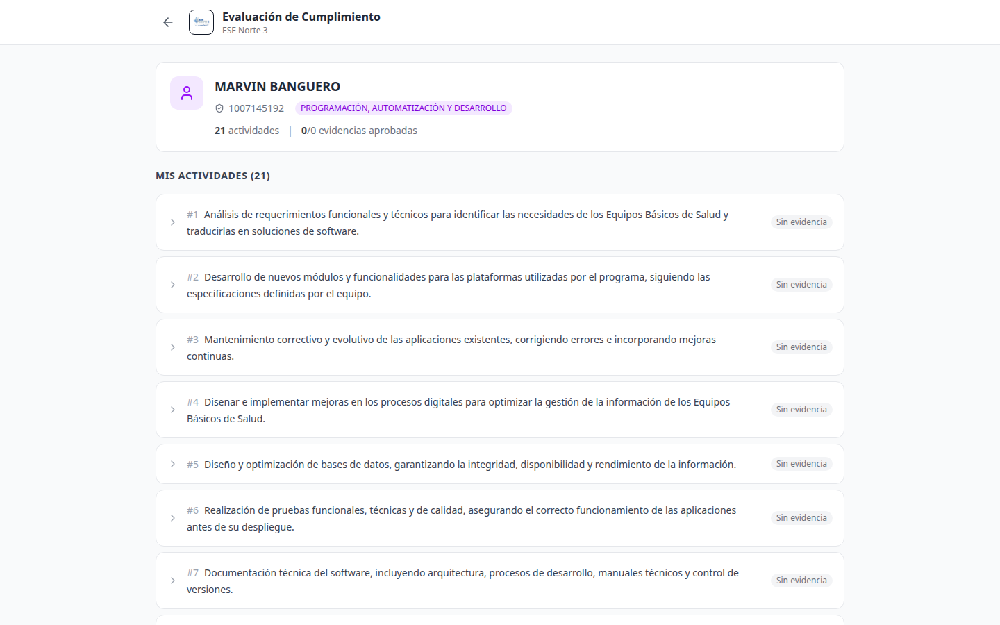

Portal de Evaluación de Cumplimiento
Manual del Contratista
ESE NORTE 3
1. Introducción
Como contratista de la ESE Norte 3, debes reportar mensualmente el cumplimiento de las actividades establecidas en tu contrato. El Portal de Evaluación de Cumplimiento es la herramienta que te permite:
- Consultar la lista de actividades de tu contrato
- Subir evidencias del trabajo realizado (fotos, PDFs, textos descriptivos)
- Conocer el estado de cada evidencia: pendiente, aprobada o rechazada
- Leer las observaciones de tu supervisor o coordinador
- Editar o reemplazar evidencias rechazadas
- Descargar el informe mensual de actividades en PDF o Word
¿Qué necesitas? Solo tu número de cédula. No necesitas usuario ni contraseña.
2. Acceso al Portal de Evaluación
Puedes acceder desde cualquier dispositivo con internet: computador, tableta o celular.
1. Abre tu navegador (Chrome, Edge, Firefox) y ve a:
https://contratos.esenorte3.lat/evaluacion
2. Verás la pantalla de Evaluación de Cumplimiento con el logo de la ESE Norte 3.
3. Ingresa tu número de cédula en el campo de búsqueda.
4. Haz clic en "Consultar mis contratos".

Portal de Evaluación de Cumplimiento — ingresa tu cédula y haz clic en Consultar mis contratos
¿No encuentras tus contratos? Si al ingresar tu cédula aparece el mensaje "No se encontró ningún registro", contacta a tu supervisor para verificar que estás registrado correctamente en el sistema.
3. Tu Panel de Actividades
Al ingresar tu cédula, el sistema te mostrará:

Panel principal — tu información y lista de actividades
En la parte superior verás:
- Tu nombre completo y número de identificación
- Número de contrato y perfil
- Resumen de cumplimiento: cuántas actividades tienes, cuántas evidencias has subido, cuántas aprobadas
Debajo, la tabla de actividades con 4 columnas:
| Columna | Descripción |
|---|
| No. | Número consecutivo de la actividad |
| ACTIVIDAD CONTRATADA | Descripción de la obligación según tu contrato |
| DESCRIPCIÓN DE ACCIONES REALIZADAS | Lo que tú reportaste (el texto que escribiste como evidencia) |
| EVIDENCIAS | Archivos, imágenes o textos que subiste como soporte |
4. Cómo Subir Evidencias
Para cada actividad de tu contrato, puedes subir evidencias de tres tipos. Haz clic en la actividad para expandirla y ver los botones de subida.
4.1. Subir una imagen
Ideal para: fotos de tu trabajo, pantallazos de sistemas, documentos escaneados, registros fotográficos de actividades realizadas.
1. Haz clic en la actividad para expandirla.
2. Haz clic en el botón 🖼️ Subir imagen.
3. Selecciona la imagen desde tu dispositivo (formatos aceptados: JPG, PNG).
4. Haz clic en Subir evidencia.
5. Espera la confirmación: "Evidencia subida exitosamente".
📸 Calidad de imágenes: Asegúrate de que las fotos sean nítidas y se vea claramente la actividad realizada. Evita fotos borrosas u oscuras. Tamaño máximo: 10 MB por archivo.
4.2. Subir un archivo (PDF, Word)
Ideal para: informes, planillas, actas, certificaciones, documentos formales.
1. Expande la actividad.
2. Haz clic en 📄 Subir archivo.
3. Selecciona el archivo (formatos: PDF, DOCX, XLSX).
4. Haz clic en Subir evidencia.
4.3. Agregar un texto
Ideal para: describir detalladamente lo que hiciste, narrar actividades, explicar resultados.
1. Expande la actividad.
2. Haz clic en 📝 Agregar texto.
3. Escribe una descripción clara de las acciones que realizaste para cumplir esa actividad.
4. Haz clic en Subir evidencia.
✍️ Sé específico: No escribas solo "cumplí". Describe cuándo, dónde, cómo y a quiénes atendiste. Incluye fechas, cantidades y resultados concretos.
5. Editar o Eliminar una Evidencia
Si te equivocaste al subir una evidencia, puedes corregirla:
- ✏️ Editar: Haz clic en el ícono de lápiz sobre la evidencia. Puedes cambiar el tipo (texto, imagen, archivo) y volver a subir. La evidencia volverá a estado Pendiente para nueva revisión.
- 🗑️ Eliminar: Haz clic en el ícono de basura. Se eliminará permanentemente la evidencia y su archivo adjunto.
⚠️ Atención: Al editar una evidencia que ya estaba aprobada, esta volverá a estado PENDIENTE y deberá ser revisada nuevamente por tu supervisor.
6. Documentos Contractuales
En la parte inferior de tu panel encontrarás la sección de Documentos Contractuales. Allí debes subir los documentos obligatorios de tu contrato:
| Documento | ¿Qué debo subir? |
|---|
| Hoja de vida | Tu hoja de vida actualizada en PDF |
| Certificación bancaria | Certificado de tu cuenta bancaria (no mayor a 30 días) |
| Antecedentes (Procuraduría) | Certificado de antecedentes vigente |
| Antecedentes (Policía) | Certificado de antecedentes judiciales |
| Registro Único Tributario (RUT) | Tu RUT actualizado |
| Fotocopia de cédula | Copia legible de tu cédula por ambos lados |
| Tarjeta profesional (si aplica) | Tarjeta profesional vigente según tu perfil |
| Pago de seguridad social | Planilla de pago de salud y pensión del mes |
| Pago de ARL | Planilla de pago de ARL del mes |
1. Busca la sección "Documentos Contractuales" al final de tu panel.
2. Haz clic en 📄 Subir junto al documento que necesitas entregar.
3. Selecciona el archivo (PDF, JPG, PNG) y haz clic en Subir documento.
4. El sistema confirmará la carga. Tu supervisor revisará el documento.
7. Descargar tu Informe de Actividades
Puedes descargar el informe mensual de cumplimiento con todas tus actividades y evidencias:
1. En la parte superior de tu panel, haz clic en 📥 Descargar informe.
2. Selecciona el formato: PDF o Word (DOCX).
3. El archivo se descargará automáticamente a tu dispositivo.
📋 El informe incluye: Tus datos, número de contrato, tabla de actividades con descripciones y evidencias, y los documentos contractuales anexos.
8. Estados de las Evidencias
Cada evidencia que subes pasa por revisión y puede tener uno de estos estados:
| Estado | Significado | ¿Qué hacer? |
|---|
| ⏳ Pendiente |
Subiste la evidencia pero aún no ha sido revisada |
Espera. Tu supervisor la revisará pronto. |
| ✅ Aprobado |
Tu evidencia fue aceptada |
¡Listo! No necesitas hacer nada más para esta actividad. |
| ❌ Rechazado |
Tu evidencia no cumple con lo requerido |
Lee la observación de tu supervisor, corrige y vuelve a subir. |
| Sin evidencia |
Aún no has subido nada para esta actividad |
Sube tu evidencia cuanto antes. |
9. Consejos para Buenas Evidencias
- ✅ Sube a tiempo: No esperes al último día del mes. Sube tus evidencias apenas realices cada actividad.
- ✅ Sé claro: Describe exactamente qué hiciste. Incluye fechas, lugares, personas atendidas, resultados.
- ✅ Fotos nítidas: Asegúrate de que las imágenes sean legibles. Si son documentos escaneados, que se vean completos.
- ✅ Una actividad = una evidencia: Para cada actividad del contrato, sube al menos una evidencia.
- ✅ Revisa antes de subir: Verifica que el archivo sea el correcto y que el texto no tenga errores.
- ✅ Guarda tus soportes: Conserva copias de todo lo que subas por si necesitas respaldos.
10. Preguntas Frecuentes
¿Necesito usuario y contraseña?
No. Solo necesitas tu número de cédula para ingresar al portal.
¿Puedo subir evidencias desde mi celular?
Sí. El portal funciona en cualquier dispositivo con navegador web. Puedes tomar fotos con tu celular y subirlas directamente.
¿Qué hago si mi evidencia fue rechazada?
Lee la observación que dejó tu supervisor (aparece en rojo debajo de la evidencia). Corrige lo indicado y sube una nueva evidencia. La anterior será reemplazada.
¿Cuántas evidencias debo subir por actividad?
Al menos una por cada actividad de tu contrato. Puedes subir más de una si la actividad lo requiere.
¿Qué tipo de evidencia es mejor?
Depende de la actividad. Para atención a pacientes: registros fotográficos. Para informes: archivos PDF o Word. Para narrar acciones: texto descriptivo.
¿Cada cuánto debo reportar?
Mensualmente. Debes subir las evidencias de todas las actividades realizadas durante el mes, idealmente antes del día 5 del mes siguiente.
¿Quién revisa mis evidencias?
El supervisor designado en tu contrato. Es la persona encargada de verificar el cumplimiento de tus obligaciones.
¿Puedo ver el informe antes de enviarlo?
Sí. Usa el botón "Descargar informe" para obtener una vista previa en PDF o Word con todas tus actividades y evidencias.